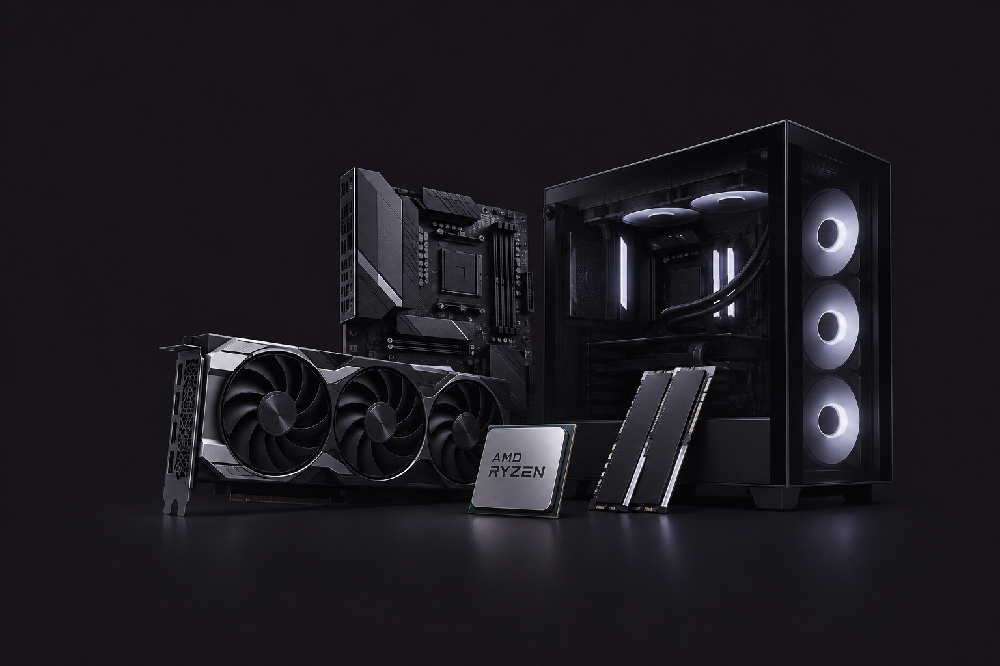

Dentro il Computer: dall'Autopsia all'Istruzione
Questo è un progetto del gruppo Casteddu per Educazione Civica. Abbiamo realizzato un sito web dove potrete scoprire quali sono i principali componenti
di un computer, come funzionano e cosa succede all'interno del vostro PC dal momento in cui premete il pulsante di accensione fino all'avvio dei primi programmi.
Buona navigazione! 😊
